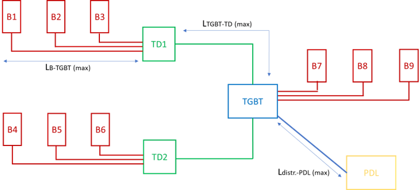
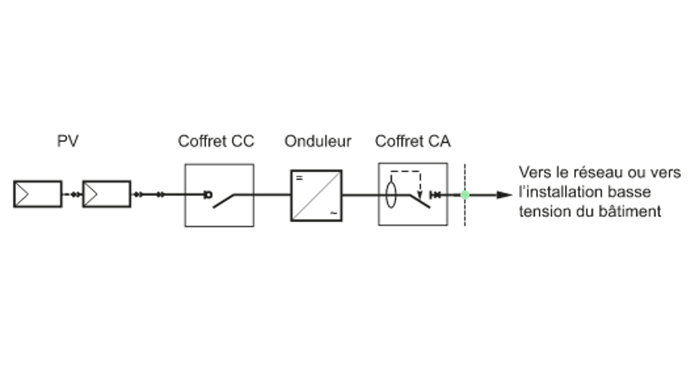
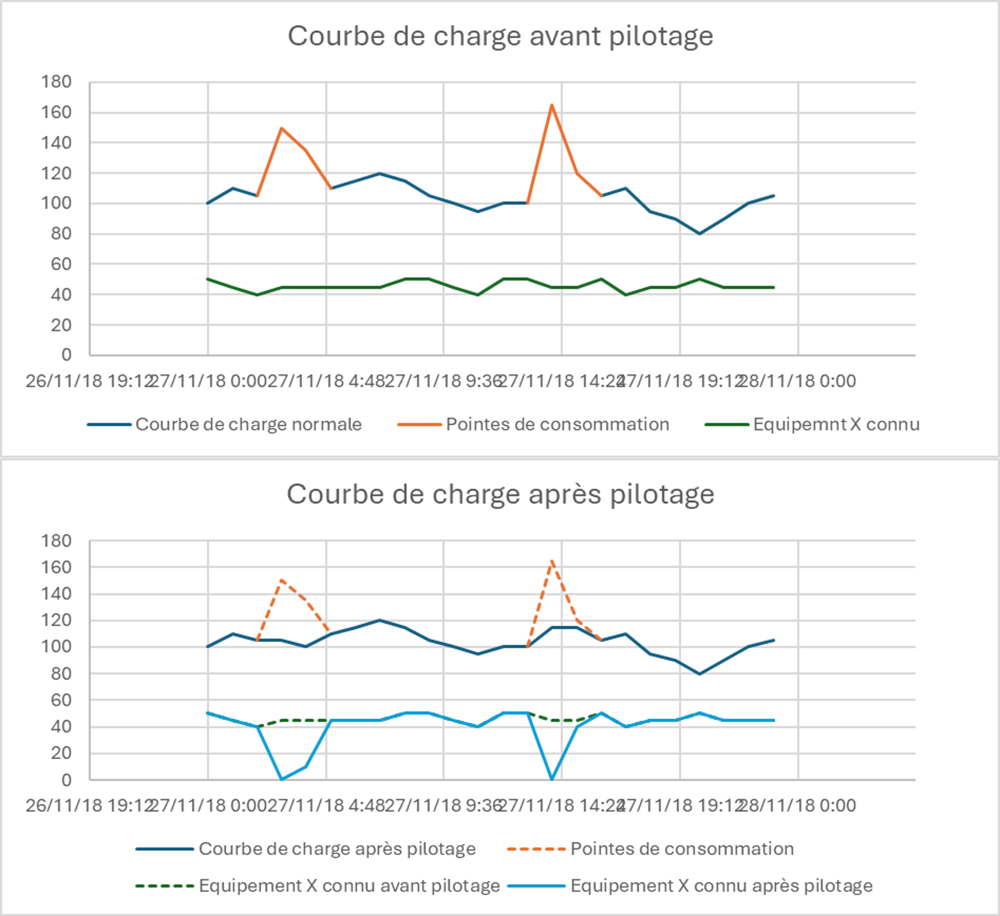

Des outils d’ingénierie pour la transition énergétique
Pendant trois ans, j’ai conçu des outils d’ingénierie construits autour d’Excel et de VBA : deux outils de dimensionnement et de chiffrage (recharge de véhicules électriques, photovoltaïque) et une démarche de pilotage intelligent de bâtiments, simulée avec du machine learning. Leur point commun : encapsuler une technique complexe pour que des commerciaux et des ingénieurs d’affaires, non spécialistes de l’électricité, produisent des études fiables.
Le contexte
L’objectif est de répondre à des offres de transition énergétique avec des démarches structurées et des chiffrages précis. Ma mission : automatiser les études techniques et standardiser les méthodes, en rendant la technique invisible pour l’utilisateur. J’ai mené la plupart de ces projets en autonomie, puis je suis devenu référent technique sur l’IRVE et le photovoltaïque auprès des équipes commerciales et techniques.
Outil 1 : dimensionnement et chiffrage de bornes de recharge (IRVE)
Le principe. L’utilisateur décrit l’installation avec peu d’informations, toutes non techniques : modèle de borne, longueurs de câbles, de conduits et de tranchées, socle béton éventuel. L’outil dimensionne toute la partie électrique, du point de livraison jusqu’aux bornes, puis chiffre l’ensemble.
L’architecture. Une interface principale, une base de données de références et des modules de traitement pilotés par des macros VBA.
La modélisation. Une installation est un graphe : les nœuds sont les bornes et les tableaux électriques, les arêtes sont les liaisons câblées. Cette représentation se traite facilement par machine et reste lisible pour des collègues. Un didacticiel et une documentation technique expliquent la méthode.

Les calculs. Sections de câbles, calibres des protections, tailles d’armoires, dimensions des conduits et des tranchées, dans le respect de la norme NF C 15-100, puis sélection des références dans la base. Le cumul des puissances repose sur un algorithme d’optimisation combinatoire inspiré du problème du sac à dos : il répartit les charges sur les trois phases pour obtenir la puissance de ligne maximale la plus basse possible. L’enjeu est économique, car le prix du matériel augmente fortement avec le calibre des protections et des câbles.
Le réseau. Les bornes communiquent avec un service de supervision par le protocole OCPP. L’outil chiffre aussi le réseau informatique associé : switches, modem 4G, abonnement.
Le chiffrage. Pour chaque borne et chaque tableau : références, prix unitaires, quantités et temps d’installation unitaires, calés sur le retour d’expérience et l’avis de professionnels. Les démarches administratives sont intégrées. Le résultat sert de référence pour construire une offre et pour confronter les prix des sous-traitants.
Outil 2 : dimensionnement et chiffrage photovoltaïque
Le besoin. D’un côté, un marketing et des garanties de résultat bien établis ; de l’autre, des outils de calcul de productible et d’étude financière. Il manquait le maillon intermédiaire : l’installation elle-même, avec ses caractéristiques techniques, ses limites et son prix le plus juste. J’ai commencé par une veille technologique et réglementaire, y compris sur le stockage par batteries, avant de concevoir l’outil.
L’architecture. Une base de données de matériel, une interface dynamique, des algorithmes de calcul et d’optimisation, un générateur de schéma de principe et un export de devis et de business plan. Plusieurs mois de travail.
Une interface qui guide. Les choix proposés s’adaptent aux réponses précédentes, ce qui limite les erreurs de conception. Les données demandées restent simples (pans de toiture, orientation, longueurs estimées), jamais des tensions ou des courants.
La modélisation. Une architecture de référence représentée par un arbre : le point de livraison à la racine, puis un tableau électrique, les onduleurs, leurs entrées, les chaînes de panneaux et les tableaux de jonction. J’ai retiré tout le superflu pour ne garder que le squelette d’une installation.

L’algorithme clé. Pour chaque pan de toit, l’outil calcule un calepinage, puis cherche le câblage série/parallèle qui respecte les limites de tension et de courant des onduleurs tout en limitant le nombre de chaînes, donc d’entrées d’onduleur utilisées. Modéliser ce problème en arithmétique modulaire (résoudre des systèmes de congruences « à l’envers ») a été la vraie difficulté : plusieurs jours de travail, pour un programme en VBA.
Les livrables. Un schéma de principe dessiné automatiquement avec les outils graphiques d’Excel, assez précis pour être relu par des experts, et un devis dont les formules restent visibles, avec des taux de marge modifiables et des prestations optionnelles (maintenance, nettoyage, assurances, télégestion).
Le déploiement. Présentation aux équipes commerciales, documentation avec exemples, puis suivi et amélioration continue à partir des retours des utilisateurs.
Outil 3 : pilotage intelligent de bâtiments (Smart Grid)
Le périmètre. Mon projet de fin d’études, sur un sujet peu développé. L’objectif n’était pas un produit prêt à l’emploi, mais une démarche d’étude pour estimer les enjeux financiers et énergétiques du pilotage des consommations.
Le principe. La courbe de charge d’un bâtiment est la somme de ses consommations, que je répartis en deux catégories : les consommateurs maîtrisés (pompes à chaleur, ventilation, climatisation) et les consommateurs stochastiques (éclairage, électronique). Quand une pointe apparaît, le système agit sur les équipements maîtrisés, dans les limites de leurs contraintes d’usage (température, taux de CO2, humidité) : délestage ou régime réduit, selon un ordre de priorité. Le résultat est un lissage de la courbe de charge et une réduction de la puissance souscrite.
La simulation. Un algorithme en Python, piloté depuis Excel, simule le fonctionnement d’un automate de pilotage. Il propose deux simulations : une estimation statistique d’un an à partir d’un échantillon de jours tirés au hasard (un calcul bien plus rapide, avec une marge d’erreur maîtrisée), et une simulation sur quelques jours consécutifs pour visualiser l’effet. Le bilan compare puissance et énergie avant et après pilotage, et chiffre l’économie annuelle sur l’abonnement.
Le vrai défi : détecter les pointes à temps. Une décomposition STL (Seasonal and Trend decomposition) sépare la courbe en saisonnalité, tendance et résidus : une pointe est une anomalie par rapport au comportement naturel du bâtiment. Mais comment prédire ce qu’on ne sait pas décrire ?
Pour différencier les pointes du signal normal, il faut lisser. Tout lissage mathématique d’un signal en temps réel accuse un retard ; le lissage exponentiel donne un retard maîtrisé. J’ai ensuite testé la dérivation et plusieurs modèles de détection d’anomalies (Local Outlier Factor, auto-encodeur, KNN, via la bibliothèque PyOD, validés avec l’AUROC). Aucun n’a été concluant : la saisonnalité noie les pointes, et il faut que la pointe arrive pour la détecter.
La solution retenue. Un modèle prédictif, Prophet, choisi pour sa simplicité : peu de paramètres, pas de calibration avant chaque usage (contrairement aux modèles de type ARMA), donc utilisable par des collègues. Il prédit la courbe à court terme ; l’étude des dérivées premières de l’écart avec le signal réel signale une pointe, sans seuil de puissance fixe. Le délesteur applique alors les régimes réduits et estime l’impact sur le bâtiment.

Les limites. La simulation agit sur les courbes de consommation plutôt que sur le comportement des équipements, et le lissage n’est pas garanti pour toutes les pointes.
Pourquoi Excel
Le choix d’Excel était imposé au départ. Je l’ai transformé en avantage : un outil intuitif, sans installation, facile à maintenir et déjà maîtrisé par les ingénieurs d’études et d’affaires. VBA apporte la logique, les interfaces dynamiques et la génération de schémas ; Python apporte le machine learning, appelé depuis Excel. La contrepartie est une exigence de rigueur : un fichier qui porte des règles métier doit être structuré et documenté comme un logiciel.
Ce que j’en retiens
- Le plus difficile n’est pas le calcul, mais l’équilibre entre la simplicité de ce que voit l’utilisateur et la complexité de ce que fait l’outil.
- Modéliser le problème est le vrai travail : un graphe, un arbre ou un système de congruences rendent ensuite l’algorithme simple.
- Le meilleur modèle est celui que l’utilisateur peut faire tourner seul : j’ai écarté des modèles plus classiques parce qu’ils demandaient une calibration à chaque usage.
- Documenter et former fait partie du livrable : didacticiel, documentation technique, présentation aux équipes, suivi.
- Cette démarche est celle que j’applique aujourd’hui, dans un environnement plus encadré.